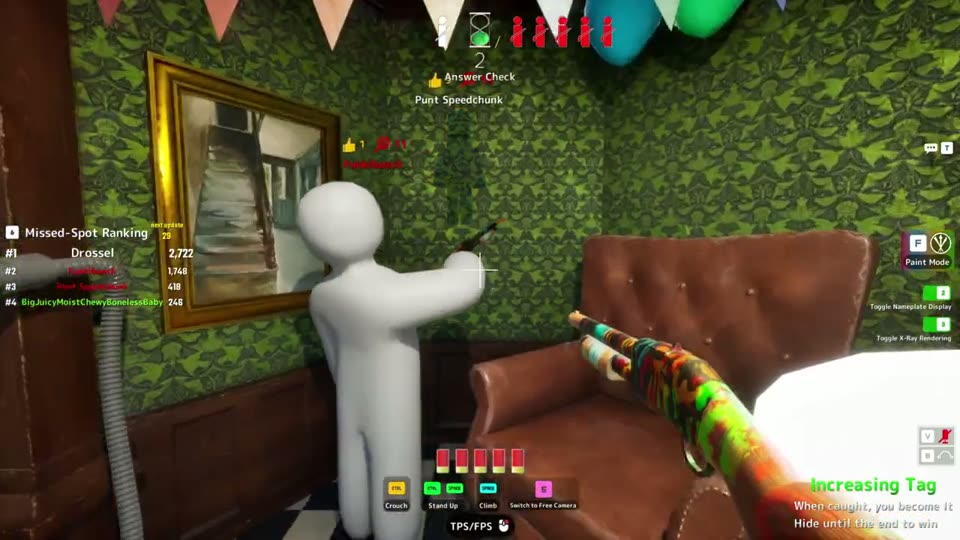
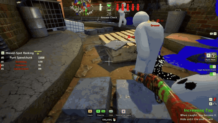
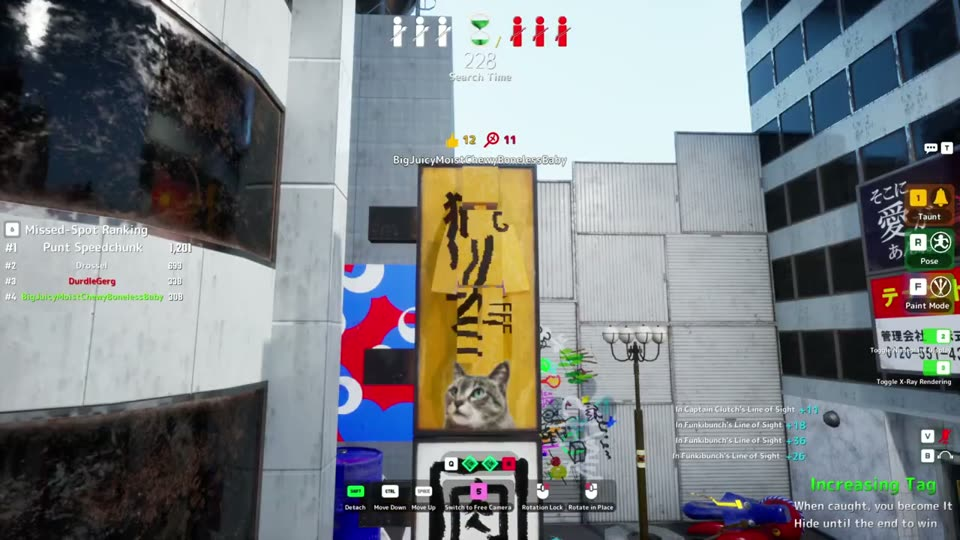
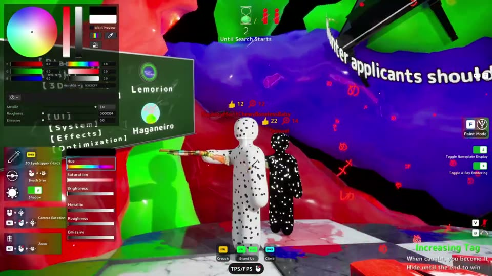

MECCHA CHAMELEON review: hide-and-seek where you paint yourself into the furniture

MECCHA CHAMELEON is an online hide-and-seek game from lemorion_1224, out on Steam since June 2026. Players split into Seekers and Hiders, and the Seekers have to find everyone before time runs out. Every hider starts as a plain white body and has to paint themselves to match the map, so the spot, the pose and your art skills decide whether you make it. It's made for about 2 to 10 players, with friends or strangers. I played with a group of friends, no mods.
A few of my friends got way too good at the paint tool. One sat next to the lucky cat statue on the Osaka map, painted as a second lucky cat. "That's a good cat." Another hid in the mansion with the green floral wallpaper painted onto their body. In the sewer, one lay down in a broken pallet with wood grain painted across their back. "How the hell did you get all that wooden texture on there?" They painted it on one pixel at a time.


I'm less of an artist. When I hid, I flattened myself against a yellow street sign in Osaka and painted black strokes to match the writing, and a seeker still shot me off it. When I was seeking, I mostly shot buckets and valves. The paint menu has a glow slider, so one round my co-seeker painted themselves black with glowing white spots, and I did the opposite and went as a Dalmatian.


The last round was on the candy map. One friend hid as a marshmallow on the frosting and got caught late. Another lay flat along the top of a churro arch, and we walked under it the whole round without seeing them. Afterward they told us we ran right through them.

The best part is the answer check at the end of each round, when the hiders show you where they were and you find out you looked right at them. MECCHA CHAMELEON is $5.99 on Steam, with Workshop maps for when you run out. The video is below. MECCHA CHAMELEON on Steam
More party games with friends: How to Fish, where we caught a whole cow, CRACK and Lethal Company as ducks.